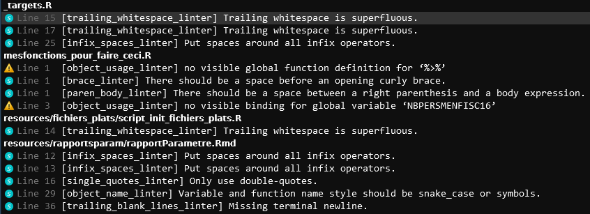

lintr::use_lintr(type = "tidyverse")30 Qualité du code
Tâche concernée et recommandation
L’utilisateur souhaite améliorer la qualité de ses scripts R pour favoriser leur lisibilité et leur maintenabilité.
- Il est recommandé d’utiliser le package
lintrpour obtenir des diagnostics de qualité du code. - Il est recommandé d’utiliser le package
stylerpour effectuer des reformatages automatiques d’un script. - Dès qu’on utilise une même portion de code plus de deux fois, il convient de la transformer en fonction (principe du don’t repeat yourself).
- Il est conseillé d’adopter la notation
package::functionlorsqu’un package n’est utilisé que pour un nombre réduit de fonctions ou lorsque des fonctions issues de packages différents portent le même nom.
Cette partie détaille de manière plus étendue les éléments enseignés dans le cadre d’une formation aux bonnes pratiques construite par l’Insee et dont les supports ont été ouverts à cette adresse.
30.1 Enjeux
Lors de l’apprentissage d’un langage, il est assez naturel de voir le code d’une manière très fonctionnelle : on désire réaliser une tâche donnée — par exemple nettoyer des champs textuels — et on va donc assembler dans un script des bouts de code, souvent trouvés sur internet, jusqu’à obtenir un projet qui réalise la tâche voulue. La structure du projet importe assez peu, tant qu’elle permet d’importer et traiter les données nécessaires à la tâche en question.
Si cette approche flexible et minimaliste fonctionne très bien lors de la phase d’apprentissage, il est malgré tout indispensable de s’en détacher progressivement à mesure qu’on progresse et que l’on peut être amené à réaliser des projets collaboratifs ou amenés à durer dans le temps.
Lorsqu’on travaille avec R, il est important de considérer le code non seulement comme un outil pour effectuer des tâches, mais aussi comme un moyen de communiquer nos méthodes et résultats à d’autres personnes. En adoptant des bonnes pratiques, on améliore la lisibilité et la compréhension d’un code, ce qui facilite la collaboration avec les réutilisateurs du code mais aussi auprès de publics extérieurs, comme les chercheurs qui souhaitent comprendre les traitements mis en oeuvre.
La lisibilité et la maintenabilité du code sont des aspects clés pour assurer la qualité d’un projet statistique. Les bonnes pratiques aident à écrire du code clair et structuré, ce qui fait gagner du temps pour s’approprier un code (lisibilité), corriger des erreurs ou apporter des modifications à un code (maintenabilité). Un code étant plus souvent lu qu’écrit1, c’est en effet la phase de maintenance d’un code qui s’avère la plus coûteuse, et non sa rédaction initiale.
La réutilisation d’un code ou de productions associées à du code, comme des bases de données, peut être grandement facilitée en adoptant des bonnes pratiques.
Grâce aux bonnes pratiques, nous pouvons nous assurer que notre travail est transparent et facilement vérifiable. Cette exigence de reproductibilité, notion centrale dans le domaine de la recherche scientifique, s’applique également dans d’autres domaines où la transparence méthodologique est cruciale pour la validité et la fiabilité des résultats. Un code de qualité facilite ainsi la vérification et la reproduction de nos résultats par d’autres personnes. A l’image du processus de revue par les pairs (peer review) dans le domaine scientifique, se développent des revues de code (code review) qui favorisent la production d’un code de qualité.
30.2 Adopter les standards communautaires
30.2.1 Enjeux
“Good coding style is like correct punctuation: you can manage without it, butitsuremakesthingseasiertoread”
Tout comme la correction de la ponctuation peut rendre un texte plus facile à lire, une bonne pratique de codage peut rendre notre code plus facile à comprendre, à maintenir et à réutiliser.
Il est notamment important de respecter les conventions du langage dans lequel le code est rédigé. Cela peut inclure des normes de formatage telles que l’indentation et la mise en forme, ainsi que des conventions de nommage telles que les noms de variables et de fonctions. En utilisant les conventions standardisées du langage, nous pouvons rendre notre code plus cohérent et plus facile à comprendre pour les autres personnes travaillant dans ce langage.
Il existe deux guides de référence qui exposent les conventions de la communauté R concernant la qualité du code : le Tidyverse style guide et le Google style guide. Ces guides proposent des conseils sur la façon d’écrire du code clair et structuré en utilisant les bonnes pratiques recommandées pour le langage R. Il est utile de lire les introductions et de se référer ponctuellement à ceux-ci pour s’assurer d’adopter des bonnes pratiques en matière de codage en R.
Note
Ces deux guides diffèrent sur certaines règles syntaxiques.
Par exemple, le Tidyverse style guide recommande de ne pas introduire de return en fin de fonction alors que le Google style guide préconise de le faire. Les deux conventions peuvent se défendre et le choix entre les deux revêt une forme d’arbitraire. Par exemple, si on privilégie la lisibilité, il est conseillé d’inclure systématiquement un return dans les fonctions, alors qu’un développeur cherchant la concision n’utilisera pas de return. De même, le choix entre camel case (objets dont les mots sont délimités avec des majuscules comme addValues) dans le Google style guide et snake case (séparation avec des _ comme add_values) proposé par Tidyverse style guide est arbitraire.
Comme il est difficile de donner des arguments objectifs pour privilégier une règle plutôt qu’une autre, il n’est pas impossible de parfois suivre celles du Tidyverse style guide et dans d’autres occasions celles du Google style guide. L’important est plutôt d’être cohérent dans le cadre d’un projet en suivant les mêmes conventions dans l’ensemble des scripts qui le constituent.
30.2.2 Outils
Pour implémenter de manière automatisée certaines des règles syntaxiques présentes dans les guides, il existe plusieurs types d’outils.
- Un linter est un programme qui vérifie que le code est formellement conforme à un certain style guide, et signale les erreurs. En revanche, un linter ne modifie pas directement le code et ne repère pas les erreurs de fond.
- Un formatter est un programme qui reformate un code source pour le rendre conforme à un certain style guide. Par définition, un formatter modifie directement le code.
Un linter se comporte un peu comme un correcteur orthographique d’un traitement de texte dont on aurait désactivé la fonction de remplacement automatique. Le formatter correspond plutôt au correcteur automatique d’un téléphone portable qui corrige automatiquement ce qu’il considère comme des erreurs.
Note
-
Exemples d’erreurs repérées par un linter :
- lignes de code trop longues ou mal indentées, parenthèses non équilibrées, noms de fonctions mal construits…
-
Exemples d’erreurs non repérées par un linter :
- fonctions mal utilisées, arguments mal spécifiés, structure du code incohérente, code insuffisamment documenté…
Dans le cas de R :
Tip
Pour que lintr utilise le guide de style tidyverse, il suffit
Pour utiliser un linter sur l’ensemble des scripts d’un projet R, la commande consacrée est :
lintr::lint_dir()::warning file=01-qualite-code.qmd,line=272,col=27::file=01-qualite-code.qmd,line=272,col=27,[trailing_whitespace_linter] Trailing whitespace is superfluous.
::warning file=02-nommage.qmd,line=30,col=7::file=02-nommage.qmd,line=30,col=7,[trailing_whitespace_linter] Trailing whitespace is superfluous.
::warning file=02-nommage.qmd,line=56,col=10::file=02-nommage.qmd,line=56,col=10,[T_and_F_symbol_linter] Use TRUE instead of the symbol T.
::warning file=02-nommage.qmd,line=60,col=1::file=02-nommage.qmd,line=60,col=1,[object_name_linter] Variable and function name style should match snake_case or symbols.
::warning file=02-nommage.qmd,line=60,col=2::file=02-nommage.qmd,line=60,col=2,[T_and_F_symbol_linter] Don't use T as a variable name, as it can break code relying on T being TRUE.
::warning file=02-nommage.qmd,line=63,col=10::file=02-nommage.qmd,line=63,col=10,[T_and_F_symbol_linter] Use TRUE instead of the symbol T.
::warning file=02-nommage.qmd,line=64,col=7::file=02-nommage.qmd,line=64,col=7,[T_and_F_symbol_linter] Use TRUE instead of the symbol T.
::warning file=02-nommage.qmd,line=77,col=19::file=02-nommage.qmd,line=77,col=19,[trailing_whitespace_linter] Trailing whitespace is superfluous.
::warning file=02-nommage.qmd,line=78,col=69::file=02-nommage.qmd,line=78,col=69,[brace_linter] There should be a space before an opening curly brace.
::warning file=02-nommage.qmd,line=78,col=69::file=02-nommage.qmd,line=78,col=69,[paren_body_linter] There should be a space between a right parenthesis and a body expression.
::warning file=02-nommage.qmd,line=83,col=20::file=02-nommage.qmd,line=83,col=20,[trailing_whitespace_linter] Trailing whitespace is superfluous.
::warning file=02-nommage.qmd,line=84,col=69::file=02-nommage.qmd,line=84,col=69,[brace_linter] There should be a space before an opening curly brace.
::warning file=02-nommage.qmd,line=84,col=69::file=02-nommage.qmd,line=84,col=69,[paren_body_linter] There should be a space between a right parenthesis and a body expression.
::warning file=03-syntaxe.qmd,line=30,col=6::file=03-syntaxe.qmd,line=30,col=6,[infix_spaces_linter] Put spaces around all infix operators.
::warning file=03-syntaxe.qmd,line=30,col=9::file=03-syntaxe.qmd,line=30,col=9,[brace_linter] There should be a space before an opening curly brace.
::warning file=03-syntaxe.qmd,line=30,col=9::file=03-syntaxe.qmd,line=30,col=9,[paren_body_linter] There should be a space between a right parenthesis and a body expression.
::warning file=03-syntaxe.qmd,line=31,col=0::file=03-syntaxe.qmd,line=31,col=0,[indentation_linter] Indentation should be 2 spaces but is 0 spaces.
::warning file=03-syntaxe.qmd,line=32,col=6::file=03-syntaxe.qmd,line=32,col=6,[infix_spaces_linter] Put spaces around all infix operators.
::warning file=03-syntaxe.qmd,line=32,col=9::file=03-syntaxe.qmd,line=32,col=9,[brace_linter] There should be a space before an opening curly brace.
::warning file=03-syntaxe.qmd,line=32,col=9::file=03-syntaxe.qmd,line=32,col=9,[paren_body_linter] There should be a space between a right parenthesis and a body expression.
::warning file=03-syntaxe.qmd,line=33,col=0::file=03-syntaxe.qmd,line=33,col=0,[indentation_linter] Indentation should be 4 spaces but is 0 spaces.
::warning file=03-syntaxe.qmd,line=34,col=0::file=03-syntaxe.qmd,line=34,col=0,[indentation_linter] Indentation should be 2 spaces but is 0 spaces.
::warning file=03-syntaxe.qmd,line=34,col=6::file=03-syntaxe.qmd,line=34,col=6,[brace_linter] There should be a space before an opening curly brace.
::warning file=03-syntaxe.qmd,line=35,col=0::file=03-syntaxe.qmd,line=35,col=0,[indentation_linter] Indentation should be 4 spaces but is 0 spaces.
::warning file=03-syntaxe.qmd,line=36,col=0::file=03-syntaxe.qmd,line=36,col=0,[indentation_linter] Indentation should be 2 spaces but is 0 spaces.
::warning file=03-syntaxe.qmd,line=37,col=6::file=03-syntaxe.qmd,line=37,col=6,[brace_linter] There should be a space before an opening curly brace.
::warning file=03-syntaxe.qmd,line=38,col=0::file=03-syntaxe.qmd,line=38,col=0,[indentation_linter] Indentation should be 2 spaces but is 0 spaces.
::warning file=03-syntaxe.qmd,line=43,col=6::file=03-syntaxe.qmd,line=43,col=6,[infix_spaces_linter] Put spaces around all infix operators.
::warning file=03-syntaxe.qmd,line=43,col=9::file=03-syntaxe.qmd,line=43,col=9,[brace_linter] There should be a space before an opening curly brace.
::warning file=03-syntaxe.qmd,line=43,col=9::file=03-syntaxe.qmd,line=43,col=9,[paren_body_linter] There should be a space between a right parenthesis and a body expression.
::warning file=03-syntaxe.qmd,line=45,col=8::file=03-syntaxe.qmd,line=45,col=8,[infix_spaces_linter] Put spaces around all infix operators.
::warning file=03-syntaxe.qmd,line=45,col=11::file=03-syntaxe.qmd,line=45,col=11,[brace_linter] There should be a space before an opening curly brace.
::warning file=03-syntaxe.qmd,line=45,col=11::file=03-syntaxe.qmd,line=45,col=11,[paren_body_linter] There should be a space between a right parenthesis and a body expression.
::warning file=03-syntaxe.qmd,line=47,col=8::file=03-syntaxe.qmd,line=47,col=8,[brace_linter] There should be a space before an opening curly brace.
::warning file=03-syntaxe.qmd,line=50,col=6::file=03-syntaxe.qmd,line=50,col=6,[brace_linter] There should be a space before an opening curly brace.
::warning file=03-syntaxe.qmd,line=67,col=4::file=03-syntaxe.qmd,line=67,col=4,[commas_linter] Commas should always have a space after.
::warning file=03-syntaxe.qmd,line=68,col=3::file=03-syntaxe.qmd,line=68,col=3,[commas_linter] Commas should never have a space before.
::warning file=03-syntaxe.qmd,line=68,col=3::file=03-syntaxe.qmd,line=68,col=3,[spaces_inside_linter] Do not place spaces after square brackets.
::warning file=03-syntaxe.qmd,line=68,col=5::file=03-syntaxe.qmd,line=68,col=5,[commas_linter] Commas should always have a space after.
::warning file=03-syntaxe.qmd,line=69,col=3::file=03-syntaxe.qmd,line=69,col=3,[commas_linter] Commas should never have a space before.
::warning file=03-syntaxe.qmd,line=69,col=3::file=03-syntaxe.qmd,line=69,col=3,[spaces_inside_linter] Do not place spaces after square brackets.
::warning file=03-syntaxe.qmd,line=79,col=5::file=03-syntaxe.qmd,line=79,col=5,[function_left_parentheses_linter] Remove spaces before the left parenthesis in a function call.
::warning file=03-syntaxe.qmd,line=80,col=6::file=03-syntaxe.qmd,line=80,col=6,[spaces_inside_linter] Do not place spaces after parentheses.
::warning file=03-syntaxe.qmd,line=80,col=22::file=03-syntaxe.qmd,line=80,col=22,[spaces_inside_linter] Do not place spaces before parentheses.
::warning file=03-syntaxe.qmd,line=92,col=3::file=03-syntaxe.qmd,line=92,col=3,[infix_spaces_linter] Put spaces around all infix operators.
::warning file=03-syntaxe.qmd,line=120,col=81::file=03-syntaxe.qmd,line=120,col=81,[line_length_linter] Lines should not be more than 80 characters. This line is 83 characters.
::warning file=04-organisation.qmd,line=11,col=74::file=04-organisation.qmd,line=11,col=74,[commas_linter] Commas should always have a space after.
::warning file=04-organisation.qmd,line=11,col=81::file=04-organisation.qmd,line=11,col=81,[line_length_linter] Lines should not be more than 80 characters. This line is 85 characters.
::warning file=04-organisation.qmd,line=12,col=3::file=04-organisation.qmd,line=12,col=3,[spaces_left_parentheses_linter] Place a space before left parenthesis, except in a function call.
::warning file=04-organisation.qmd,line=59,col=10::file=04-organisation.qmd,line=59,col=10,[trailing_whitespace_linter] Trailing whitespace is superfluous.
::warning file=04-organisation.qmd,line=79,col=3::file=04-organisation.qmd,line=79,col=3,[trailing_whitespace_linter] Trailing whitespace is superfluous.
::warning file=04-organisation.qmd,line=123,col=1::file=04-organisation.qmd,line=123,col=1,[trailing_blank_lines_linter] Trailing blank lines are superfluous.
::warning file=05-regles.qmd,line=8,col=34::file=05-regles.qmd,line=8,col=34,[infix_spaces_linter] Put spaces around all infix operators.
::warning file=05-regles.qmd,line=9,col=35::file=05-regles.qmd,line=9,col=35,[infix_spaces_linter] Put spaces around all infix operators.
::warning file=05-regles.qmd,line=31,col=34::file=05-regles.qmd,line=31,col=34,[infix_spaces_linter] Put spaces around all infix operators.
::warning file=05-regles.qmd,line=32,col=35::file=05-regles.qmd,line=32,col=35,[infix_spaces_linter] Put spaces around all infix operators.
::warning file=05-regles.qmd,line=69,col=8::file=05-regles.qmd,line=69,col=8,[error] unexpected symbol
::warning file=06-outils.qmd,line=14,col=3::file=06-outils.qmd,line=14,col=3,[trailing_whitespace_linter] Trailing whitespace is superfluous.
::warning file=06-outils.qmd,line=16,col=3::file=06-outils.qmd,line=16,col=3,[trailing_whitespace_linter] Trailing whitespace is superfluous.
::warning file=06-outils.qmd,line=33,col=3::file=06-outils.qmd,line=33,col=3,[trailing_whitespace_linter] Trailing whitespace is superfluous.
::warning file=06-outils.qmd,line=37,col=3::file=06-outils.qmd,line=37,col=3,[trailing_whitespace_linter] Trailing whitespace is superfluous.
::warning file=06-outils.qmd,line=49,col=3::file=06-outils.qmd,line=49,col=3,[trailing_whitespace_linter] Trailing whitespace is superfluous.
::warning file=06-outils.qmd,line=56,col=3::file=06-outils.qmd,line=56,col=3,[trailing_whitespace_linter] Trailing whitespace is superfluous.
::warning file=06-outils.qmd,line=69,col=20::file=06-outils.qmd,line=69,col=20,[trailing_whitespace_linter] Trailing whitespace is superfluous.
::warning file=06-outils.qmd,line=71,col=23::file=06-outils.qmd,line=71,col=23,[trailing_whitespace_linter] Trailing whitespace is superfluous.
::warning file=06-outils.qmd,line=112,col=37::file=06-outils.qmd,line=112,col=37,[brace_linter] There should be a space before an opening curly brace.
::warning file=06-outils.qmd,line=112,col=37::file=06-outils.qmd,line=112,col=37,[paren_body_linter] There should be a space between a right parenthesis and a body expression.
::warning file=06-outils.qmd,line=113,col=1::file=06-outils.qmd,line=113,col=1,[trailing_whitespace_linter] Trailing whitespace is superfluous.
::warning file=06-outils.qmd,line=117,col=42::file=06-outils.qmd,line=117,col=42,[commas_linter] Commas should always have a space after.
::warning file=06-outils.qmd,line=118,col=9::file=06-outils.qmd,line=118,col=9,[brace_linter] There should be a space before an opening curly brace.Le linter renvoie une suite, plus ou moins longue selon la qualité du projet, de dérogations aux bonnes pratiques.
 Le linter ne faisant pas les corrections automatiquement, il est donc nécessaire d’ouvrir le fichier, se rendre à la ligne correspondante, et corriger. Les lignes indiquées ne sont pas mises à jour automatiquement, elles peuvent donc ne plus correspondre à celles du fichier lors de la phase de modifications. Il est donc pratique de faire tourner régulièrement le linter lors d’une phase de nettoyage.
Il est également possible de n’évaluer qu’un fichier avec lintr::lint:
lintr::lint("mesfonctions_pour_faire_ceci.R")::warning file=/__w/utilitR/utilitR/mesfonctions_pour_faire_ceci.R,line=1,col=59::file=/__w/utilitR/utilitR/mesfonctions_pour_faire_ceci.R,line=1,col=59,[brace_linter] There should be a space before an opening curly brace.
::warning file=/__w/utilitR/utilitR/mesfonctions_pour_faire_ceci.R,line=1,col=59::file=/__w/utilitR/utilitR/mesfonctions_pour_faire_ceci.R,line=1,col=59,[paren_body_linter] There should be a space between a right parenthesis and a body expression.
::warning file=/__w/utilitR/utilitR/mesfonctions_pour_faire_ceci.R,line=3,col=14::file=/__w/utilitR/utilitR/mesfonctions_pour_faire_ceci.R,line=3,col=14,[object_usage_linter] no visible global function definition for '%>%'
::warning file=/__w/utilitR/utilitR/mesfonctions_pour_faire_ceci.R,line=3,col=25::file=/__w/utilitR/utilitR/mesfonctions_pour_faire_ceci.R,line=3,col=25,[object_usage_linter] no visible binding for global variable 'NBPERSMENFISC16'Le package styler propose le même type de fonctions qui vont quant à elles modifier le code:
- Pour modifier un seul script, la fonction à utiliser est
styler::style_file; - Pour modifier l’ensemble des scripts d’un dossier, la fonction à utiliser est
styler::style_dir
30.3 Utiliser des fonctions
30.3.1 Pourquoi utiliser des fonctions?
L’utilisation de fonctions est l’une des bonnes pratiques en matière de programmation qui s’applique à tous les langages de programmation, y compris R.
La règle DRY pour do not repeat yourself (ne pas se répéter) indique qu’il faut éviter de copier-coller du code lorsqu’il est utilisé plus de deux fois. Au lieu de cela, on devrait encapsuler ce code dans une fonction et utiliser cette fonction aux endroits où cela est nécessaire.
Utiliser des fonctions présente plusieurs avantages:
Utiliser des fonctions réduit les risques d’erreurs liées au copier-coller de code. Si une modification est nécessaire, elle peut être apportée dans la fonction, à un seul endroit du code, ce qui garantit que toutes les utilisations de la fonction seront automatiquement mises à jour. Cette pratique minimise les erreurs et peut représenter une économie de temps substantielle dans un gros projet.
Utiliser des fonctions rend également le code plus lisible et plus compact en encapsulant un traitement spécifique dans une section distincte du code.
Utiliser des fonctions facilite la réutilisation et la documentation du code. D’une part parce qu’en encapsulant un traitement dans une fonction, on peut facilement le réutiliser dans d’autres parties du code. D’autre part, parce que décrire clairement ce que fait chaque fonction contribue à documenter le code dans son ensemble.
Enfin, un nom bien choisi pour une fonction donne déjà une bonne idée de ce à quoi elle sert, facilitant en cela la compréhension d’une chaîne de traitements.
30.4 Auto-documenter son code
Les grands principes de la documentation de code consistent à :
Documenter le pourquoi plutôt que le comment : il est plus important de comprendre pourquoi le code a été écrit de la manière dont il l’a été, plutôt que de connaître les détails techniques de son fonctionnement. En documentant le pourquoi, on peut mieux comprendre le but du code et comment il s’intègre dans le projet plus global.
Privilégier l’auto-documentation via des nommages pertinents : le code peut être plus clair et plus facile à comprendre si les variables, les fonctions et les autres éléments ont des noms pertinents et explicites. Cela permet de documenter le code de manière implicite et de rendre la lecture du code plus intuitive.
En gardant ces grands principes à l’esprit, on peut écrire du code qui est plus facile à comprendre et à maintenir, ce qui peut économiser du temps et des ressources dans le long terme.
. . .
Tip
Comment bien documenter un script ?
- Minimum 🚦 : commentaire au début du script pour décrire ce qu’il fait ;
- Bien 👍 : commenter les parties “délicates” du code ;
-
Idéal 💪 : documenter ses fonctions avec la syntaxe
roxygen2.
30.5 Pas d’ambiguïté sur les packages utilisés
Deux fonctions peuvent avoir le même nom dans des packages différents. Par exemple, la fonction select existe dans les packages dplyr et MASS. Par défaut, R utilise la fonction du package chargé le plus récemment (avec library()). Ce comportement peut causer des erreurs difficiles à repérer, car il est nécessaire d’exécuter le code pour les détecter. Par exemple, le code suivant renvoie une erreur difficile à comprendre si on ne l’a pas déjà rencontrée.
Attaching package: 'dplyr'The following objects are masked from 'package:stats':
filter, lagThe following objects are masked from 'package:base':
intersect, setdiff, setequal, union
Attaching package: 'MASS'The following object is masked from 'package:dplyr':
selectbpe_ens_2018 <- doremifasolData::bpe_ens_2018
nombre <- bpe_ens_2018 %>%
as_tibble() %>%
select(TYPEQU, NB_EQUIP) Error in select(., TYPEQU, NB_EQUIP): unused arguments (TYPEQU, NB_EQUIP)Cela provient du fait que MASS étant le dernier package chargé, R utilise sa fonction select plutôt que celle de dplyr.
Afin d’éviter ces erreurs, il est recommandé de réserver library(pkg) aux packages dont on utilise des fonctions à de nombreuses reprises dans un code. Inversement, pour les packages utilisés de façon ponctuelle il est recommandé d’indiquer explicitement le package en utilisant la notation package::fonction(). De même, si une fonction présente le même nom dans deux packages, il est recommandé d’utiliser cette notation. Cela permet de garantir que la bonne fonction est appelée et d’éviter les erreurs potentielles.
30.6 Le package conflicted
Le package conflicted aide à gérer les conflits de packages de manière fluide.
30.7 Ressources supplémentaires
- R Packages par Hadley Wickham and Jenny Bryan
- Une présentation très bien faite
-
Un cours complet sur la reproductibilité avec
R - L’équivalent
Pythonen 3A d’ENSAE
30.8 Exercices
to be completed
Cette phrase très connue est une citation de Guido Van Rossum, le créateur de
Python.RcommePythonsont des langages conçus pour être plus transparents et faciles à lire que des langages bas niveaux commeC.↩︎
30.3.2 Comment bien utiliser les fonctions?
Un biais à éviter est le code spaghetti. Il s’agit d’un code qui est difficile à comprendre et à maintenir en raison de sa complexité, de sa longueur et de sa structure désorganisée. Pour éviter le code spaghetti, il est important de suivre certaines règles pour écrire des fonctions pertinentes. Voici les trois principales règles à retenir :
Une tâche = une fonction : chaque fonction devrait effectuer une seule tâche spécifique. Cela permet de rendre le code plus clair et plus facile à comprendre.
Une tâche complexe = un enchaînement de fonctions réalisant chacune une tâche simple : si une tâche est complexe, elle peut être divisée en plusieurs tâches plus simples et encapsulées dans des fonctions distinctes. Cela permet de rendre le code plus facile à comprendre et à maintenir.
Limiter l’utilisation de variables globales : les variables globales sont accessibles depuis n’importe quel endroit du code, ce qui peut rendre le code difficile à comprendre et à maintenir. Il est donc recommandé de limiter l’utilisation de variables globales et d’utiliser des variables locales au lieu de cela. Cela permet de rendre le code plus clair et plus facile à comprendre.